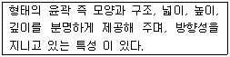

화훼장식기능사 (2010-03-28 기출문제)
1과목: 화훼장식재료
1. 철사의 표준치수 중 가장 굵은 것은?
- #24철사
- #22철사
- #20철사
- #18철사
(정답률: 97%)

2. 가을에 씨를 뿌려 봄 화단에 이용하는 한해살이 화초가 아닌 것은?
- 팬지
- 매리골드
- 데이지
- 프리뮬라
(정답률: 57%)
3. 절엽 또는 분화용으로 주로 이용되는 식물이 아닌 것은?
- 아스파라거스
- 알로카시아
- 회양목
- 엽란
(정답률: 53%)
4. 형태에 따른 분류에서 선형(line)꽃에 속하지 않는 것은?
- 글라디올러스
- 리아트리스
- 스토크
- 카틀레야
(정답률: 76%)
5. 절지용으로 이용되지 않는 식물은?
- 버드나무
- 철쭉
- 삼지닥나무
- 홍화
(정답률: 57%)
6. 다알리아에 대한 설명으로 옳은 것은?
- 추식구근이다.
- 내한성이 강한 편이다.
- 구근류의 분류상 괴근에 속한다.
- 줄기가 비대해져 알뿌리 모양으로 된 것이다.
(정답률: 59%)
7. 상업적인 디스플레이용 화훼장식의 특징으로 거리가 먼 것은?
- 고객으로 하여금 상품을 구입하도록 동기를 만들어 준다.
- 예술가로서 또는 화훼장식 전문가로서의 홍보와 아이디어를 선보인다.
- 단순한 공간장식보다는 성업공간의 이미지 전달과 홍보를 위한 시선 집중을 유도한다.
- 계절별 주제를 잡아 이에 어울리는 화훼식물을 도입하는 경우가 많다.
(정답률: 65%)
8. 꽃꽂이 소재로 주로 열매를 관상대상으로 이용하는 것은?
- 좀작살나무
- 수국
- 꽝꽝나무
- 개나리
(정답률: 67%)
9. 건조 등 환경적응력이 강한 식물로 독특한 모양으로 인해 실내 분식물 장식에서 관엽식물 다음으로 많이 이용되는 식물은?
- 고산식물
- 구근류
- 화목류
- 다육식물
(정답률: 90%)
10. 화훼식물의 정의로 가장 적합한 것은?
- 아름다운 꽃을 의미한다.
- 꽃과 화목류를 의미한다.
- 꽃과 풀 그리고 나무를 의미한다.
- 아름다운 꽃과 열매 등 미적인 관상을 목적으로 기르는 식물이다.
(정답률: 72%)
11. 다육식물로만 나열된 것은?
- 꽃잔디, 원추리, 국화
- 크로톤, 드라세나, 옥잠화
- 바위솔, 알로에, 용설란
- 관음죽, 종려, 벤자민
(정답률: 85%)
12. 화훼식물의 분류에 대한 설명으로 틀린 것은?
- 군자란은 난과식물이다.
- 팔손이는 관엽식물이다.
- 아이리스, 크로커스는 구근류에 속한다.
- 숙근류는 다년생으로 자라는 것을 말한다.
(정답률: 62%)
13. 도구 및 부재료의 보관 방법으로 적합하지 않는 것은?
- 본 및 포장지는 광선에 의해 변색되기 쉬우므로 광과 습기가 들어가지 않는 장소에 보관 한다.
- 스프레이는 화재 위험이 없는 곳에 보관한다.
- 플로랄 테이프는 접착성 물질이 굳지 않도록 따뜻한 곳에 보관한다.
- 플로랄 폼은 상자에 넣은 채로 건조한 곳에 보관한다.
(정답률: 94%)
14. 건조용 소재별 주요 이용 부위로 틀린 것은?
- 장미 - 꽃
- 아킬레아 - 잎
- 라그러스 - 이삭
- 연밥 - 열매
(정답률: 42%)
15. 학명의 표기 방법 중 명명자의 표기에 관한 설명으로 틀 린 것은?
- 명명자와 기재자가 다를 경우, 영어의 from에 해당하는 al 을 붙인다.
- 명명자의 표기는 약자로 표기할 수 있다.
- 명명자가 2~3명일 경우, 점속사 et를 사용하여 Sied. et Zucc. 와 같이 표기한다.
- Tagg ex Nakai et Koidz는 Nakai와 Koidz가 기재하여 Tagg의 명명을 유효화 했을 경우이다
(정답률: 47%)
16. 토양수분 중 식물의 흡수 및 생육에 가장 관계가 깊은 것은?
- 흡착수
- 모관수
- 지하수
- 중력수
(정답률: 66%)
17. 동양식 꽃꽂이의 화형 중 제 1주지가 화기의 입구 아래로 늘어지는 형은?
- 직립형
- 경사형
- 중간형
- 하수형
(정답률: 89%)
18. 대칭형 방사선 줄기배열의 장식적 구성양식에서 깊이감 혹은 입체감을 강조하는 방법으로 사용되기에 적합하지 않은 기법은?
- 쉐도잉(shadowing)
- 시퀀싱(sequencing)
- 조닝(zoning)
- 레이어링(layering)
(정답률: 65%)
19. 낚시 바늘 모양으로 구부린 철사를 꽃 중심에 꽂아 줄기 안으로 밀어 넣은 철사 처리법은?
- 피어싱(piercing)법
- 인서션(insertion)법
- 후킹(hooking)법
- 크로싱(crossing)법
(정답률: 85%)
20. 테이블장식에서 고려할 사항으로 틀린 것은?
- 진한 향과 색의 꽃을 꽂는다.
- 사방에서 감상할 수 있도록 꽂는다.
- 장식물이 시야를 가리지 않도록 꽂는다.
- 꽃이나 잎이 잘 떨어지는 소재는 피한다.
(정답률: 96%)
2과목: 화훼장식 제작 및 유지관리
21. 작은 보석들을 바탕 금속이 보이지 않도록 빽빽하게 모아 배치하는 데서 유래한 형식으로 편평한 용기에 소재들을 조밀하게 배치하여 색과 질감을 대비시켜 구성하는 화훼 장식 디자인은?
- 파페 디자인
- 뉴 컨벤션 디자인
- 풍경식 디자인
- 밀 드 플레 디자인
(정답률: 86%)
22. 철사 처리법 중 주로 인서션(insertion)법으로 처리하는 소재로 나열된 것은?
- 안개초, 백합
- 거베라, 장미
- 나팔수선, 칼라
- 카네이션, 라넌큘러스
(정답률: 74%)
23. 방사선 배열로 된 꽃꽂이 형태에 대한 설명으로 옳은 것은?
- 원형, 평행형, 폭포형, 수평형 등이 있다.
- 교차선 배열에서 발전된 형으로 유연한 선이 흐름이다.
- 모든 줄기의 선이 한 개의 초점에서 사방으로 전개되는 배열이다.
- 일정한 규칙 없이 배열되거나 줄기를 짧게 잘라 꽃송이 나 꽃잎만을 사용하여 구성한다.
(정답률: 83%)
24. 절화의 노화를 촉진하는 요인이 아닌 것은?
- 적당한 저온상태의 보관
- 호흡에 의한 양분의 소모
- 수분흡수 불량에 의한 수분결핍
- 성숙한 꽃에서 발생한 에틸렌 가스
(정답률: 81%)
25. 절화의 수명 단축에 관여하는 요인과 수명 연장 방법에 대 한 설명으로 틀린 것은?
- 공기 중의 에틸렌가스 농도가 높아지면 잎의 황화와 노화가 촉진된다.
- 공중 습도가 90% 이상으로 지나치게 높은 상태에서 기온이 상승하면 꽃이 부패하지 쉽다.
- 물의 흡수면적을 넓혀 주기 위해 절단면이 90°가 되도록 자른다.
- 질산은(AgNO3)과 타오황산은(silverthioul fate)용액은 에틸렌가스 발생을 억제시킨다.
(정답률: 83%)
26. 자생지가 온대산인 식물의 화분갈이 시기로 가장 적절한 때는?
- 낙엽이 지는 가을철
- 생장이 완료되어 휴면이 시작되기 전
- 겨울철 휴면기간
- 휴면이 끝나고 생장 직전
(정답률: 75%)
27. 자연적인 구성형식으로 보기 어려운 것은?
- 장식적(decorative) 구성
- 식물학적(botanical) 구성
- 식생적(vegetative) 구성
- 풍경식(landscape) 구성
(정답률: 85%)
28. 증산의 대부분은 잎의 어느 부위에서 이루어 지는가?
- 해면조직
- 책상조직
- 기공
- 상표피
(정답률: 78%)
29. 다음 중 에틸렌에 가장 민감한 화훼류는?
- 툴립
- 거베라
- 카네이션
- 안스리움
(정답률: 64%)
30. 형선적(formal linear) 구성에서 고려할 요소가 아닌 것은?
- 소재의 양은 가능 한 많이 사용한다.
- 색채의 뚜렷한 대비가 이루어지도록 표현한다.
- 각소재의 형태와 운동성을 분명하게 표현한다.
- 선들간의 명확한 대조가 이루어지도록표현한다
(정답률: 90%)
31. 밴딩(banding)의 제작 기법에 대한 설명으로 틀린 것은?
- 작품의 특성 부분에 시선을 끌기 위해 울타리 역할의 소재를 배치하는 기술이다.
- 장식적인 목적으로 강조하기 위하여 묶는 기술 이다.
- 질감과 색감을 부여해서 주의를 끌기 위한 기술이다.
- 주로 라피아(raffia), 색상 철사, 리본, 잎을 이용한다.
(정답률: 60%)
32. 절화를 꽂는 물에 구연산을 넣어주는 주된 이유는?
- 화색을 좋게 하기 위하여
- 꽃에 영양분을 주기 위하여
- 줄기의 갈라짐을 방지하기 위하여
- 물을 신성화하여 미생물의 증식을 억제하기 위하여
(정답률: 74%)
33. 절화의 수명연장 방법으로 적당하지 않은 것은?
- 목본성 줄기를 가진 절화는 90~100°C 물에 약 60초간 담근다.
- 유액이 나오는 절화는 절단면을 강한 불에 약 5분간 그을린다.
- 1~2일 마다 절단면을 물속에서 2~3cm 정도 재 절단하며, 물도 갈아 준다.
- 물은 끓여서 식힌 후 침전물을 제거하여 사용한다.
(정답률: 58%)
34. 분식물의 제작 과정에 대한 설명으로 틀린 것은?
- 화분 밑의 배수구는 망사나 돌로 막는다.
- 잔돌이나 굵은 모래를 용기 높이의 1/5 정도까지 깐다.
- 배수층 위에 혼합된 토양을 깔고 식물을 심어 나간다.
- 풍성한 느낌이 나도록 분토를 화분 높이보다 높게 돋운 다.
(정답률: 91%)
35. 냉장보관하지 않아야 하는 꽃은?
- 히야신스
- 나팔수선
- 튤립
- 안스리움
(정답률: 71%)
36. 핸드타이드 부케를 만들 때 지켜야할 사항으로 거리가 먼 것은?
- 줄기 끝을 사선으로 자른다.
- 소재 줄기는 나선형으로 돌리거나 작렬로 모아 묶는다.
- 소재나 색상은 반드시 그룹핑으로 해야 한다.
- 바인딩 포인트 아래줄기의 잎은 모두 떼어낸다
(정답률: 83%)
37. 화훼류 재배 배양토의 가장 적정한 pH 범위는?
- hP 3.0~3.5
- pH 4.0~4.6
- hP 5.0~7.0
- pH 8.0~9.0
(정답률: 75%)
38. 절화 수확 후 절화의 흡수를 증진하는 방법으로 적절하지 않은 것은?
- 물속에서 줄기를 자른다.
- 줄기의 절단 부위를 삶는다.
- 줄기의 절단 부위를 태운다.
- 줄기 절단 부위를 95% 알콜에 오래 담근다.
(정답률: 83%)
39. 절화보존용액의 효과로 거리가 먼 것은?
- 절화의 관상기간을 연장시킨다.
- 절화의 물올림을 원활하게 해준다.
- 조기 채화되어 봉오리인 꽃의 개화를 돕는다.
- 상온에서도 절화를 장시간 저장할 수 있게 한다.
(정답률: 40%)
40. 화훼장식품의 제작 기법에 대한 설명으로 틀린 것은?
- 번들링(bundling)은 유사한 재료를 다발로 묶어 장식하는 기법이다.
- 레이어링(layering)은 포기나 덩어리를 둘 이상 나누어 꽂는 기법이다.
- 그룹핑(grouping)은 같은 종류, 색, 질감 등의 소재를 함께 모아 소재가 두드러져 보이도록 하는 기법이다.
- 시퀀싱(sequencing)은 크기, 색 등의 요소에 점진적인 변화를 주어 꽂는 기법이다.
(정답률: 76%)
3과목: 화훼장식론
41. 테라싱(terracing) 기법에 대한 설명으로 옳은 것은?
- 동일한 소재들을 크기에 따라 앞 뒤 수평이 되게 일정 한 간격으로 계단처럼 배치한다.
- 특수한 요소를 강조하거나 주의를 끌 필요가 있을 때 사용하는 기법이다.
- 동일한 단위로 알아볼 수 있도록 모아 시각적인 효과를 거두도록 하는 기법이다.
- 보석박기, 작은 알돌들을 가능한 빡빡하게 모으는 것처럼 소재를 구성하는 것이다.
(정답률: 86%)
42. 화훼장식의 디자인 요소 중 무엇에 관한 설명인가?

- 선(line)
- 형태(form)
- 공간(space)
- 질감(texture)
(정답률: 81%)
43. 장미를 건조 시킬 때 적합하지 않은 방법은?
- 자연 건조
- 실리카겔 건조
- 열풍 건조
- 탄화 건조
(정답률: 65%)
44. 화훼가공에 관한 설명으로 옳은 것은?
- 자연건조에 적합한 꽃은 튤립이다.
- 향이 좋은 식물체를 건조하여 감상하는 것을 토피어리라 한다.
- 글리세린 건조법에서 물과 글리세린의 혼합비율은 1:5 가 적합하다.
- 수산화칼륭(KOH)은 망사잎(skeletonizing leaves)의 가공에 사용되는 약제이다.
(정답률: 49%)
45. 깊이감을 주는 방법이 아닌 것은?
- 줄기선의 각도를 조절하다.
- 꽃을 부분적으로 겹치게 배열한다.
- 색, 크기, 질감의 변화를 이용한다.
- 선명하고 짙은 색은 뒷부분에 높게, 옅고 가벼운 색은 앞부분에 낮게 배치한다.
(정답률: 71%)
46. 화훼장식의 기능 및 효과로 거리가 먼 것은?
- 노인의 재활 치료 효과
- 화훼 재료에 대한 교육 효과
- 상업공간에서 나타나는 경제적 효과
- 심리적 편안함에 따른 작업기피 효과
(정답률: 82%)
47. 화훼장식 디자인 요소로 거리가 먼 것은?
- 형태
- 깊이
- 움직임
- 색
(정답률: 82%)
48. 화훼장식 디자인의 조형 형태에 대한 설명 중 틀린 것은?
- 장식적 구성은 식물이 자연의 식생에서 보여주고 있는 모습과는 관계없이 디자이너의 의도로 소재를 자유롭게 구성하는 방법이다.
- 식생적 구성은 식물의 생리, 생태적인 면을 고려하여 식물이 자연상태에서 살아있는 것과 같은 형태로 조형하는 방법이다.
- 형선적 구성은 형 또는 매스를 최소로 표현하고 여백을 이용하여 꽃, 잎, 줄기의 아름다움을 강조한다.
- 꽃꽂이의 입체적인 형태는 측면에서 바라본 모습을 기준으로 하여 조형 형태를 구분한다.
(정답률: 66%)
49. 어떤 두 색이 맞붙어 있을 경우, 그 경계의 언저리가 경계로부터 멀리 떨어져있는 부분보다 3 속성 대비가 강하게 일어나는 현상은?
- 연변대비
- 계시대비
- 동시대비
- 색상대비
(정답률: 59%)
50. 황갈색의 가벼운 종려 섬유질로 매듭 또는 보를 만들어 장식하거나 묶는 용도로 사용되는 것은?
- 지철사
- 플로랄 테이프
- 라피아
- 카파와이어
(정답률: 91%)
51. 화훼장식의 디자인 원리 중 비례에 대한 설명으로 틀린 것은?
- 자연에서 식물의 꽃, 잎, 가지의 배열 등은 황금분할에 해당하는 것이 많다.
- 황금분할은 유클리드에 의해 알려진 이상적인 비율이다.
- 주그룹, 대항그룹, 보조그룹의 크기는 3:5:8의 비율이 적절하다.
- 비례는 전체 구성에 대한 부분 구성의 비율로 나타낸다.
(정답률: 67%)
52. 누름 건조에 대한 설명으로 틀린 것은?
- 압화라고도 불리며 입체적인 장식에 주로 이용된다.
- 누구나 손쉽게 할 수 있으며 다양한 표현이 가능하다.
- 꽃이나 잎을 흡습지 사이에 넣고, 눌러서 건조 시킨다.
- 식물의 잎과 줄기, 야채, 과일, 해초 등 재료가 다양하다.
(정답률: 63%)
53. 색(color)에 대한 설명으로 옳은 것은?
- 장파장의 색상은 따뜻한 색이다.
- 명도가 낮은 색은 높은 색보다 가벼워 보인다.
- 동일 면적에서 주황색은 노란색보다 커보인다.
- 배경이 어두울 때는 밝은 색보다 어두운 색이 진출되어 보인다.
(정답률: 65%)
54. 화훼장식의 디자인 요소인 선의 종류별 효과로 바르게 짝 지어진 것은?
- 수직선 - 느리고 여유있는 움직임
- 수평선 - 직접적이고 강직
- 사선 - 평화적이고 안정감
- 곡선 - 부드러움
(정답률: 90%)
55. 노랑(yellow)색상의 특성과 이미지에 관한 설명으로 거리 가 먼 것은?
- 노란색의 보색은 (남색PB)이다.
- 노랑은 빨강이나 주황과 같이 난색이며, 후퇴색이므로 크게 보인다.
- 가시스펙트럼에서 570~580nm 사이의 색으로 색상 중 가장 밝은 기본색이다.
- ‘조심’의 뜻을 지니고 있어 주의 또는 방사능 표지등에 사용된다.
(정답률: 61%)
56. 화훼장식의 디자인 원리 중 균형의 원리를 적용한 것은?
- 같은 색을 반복할 경우 명도나 채도를 다르게 배열한다.
- 현관문을 기준으로 양쪽에 동일한 크기의 벤자민 고무나무를 배치한다.
- 주황색 꽃을 이용하여 빨강과 노랑꽃을 시각적으로 연결시켜 시선의 흐름을 부드럽게 만든다
- 현관에서 로비로 통하는 길에 반구형의 꽃꽂이 디자인을 반복적으로 배치하여 방문객을 로비로 안내한다.
(정답률: 72%)
57. 화훼장식 디자인의 조화를 이루기 위한 방법으로 적당하지 않은 것은?
- 중심 테마를 반복하면서도 대비적 요소를 만든다.
- 디자인에서 각 요소들 간의 유사한 요소를 반복한다.
- 디자인의 시각적인 균형을 맞추기 위해서 비대칭균형의 사용을 피한다.
- 사람의 시선을 끌어당기는 하나의 초점을 만들어 디자인을 통합시킨다.
(정답률: 62%)
58. 색의 속성에 관한 설명으로 틀린 것은?
- 색상은 색채의 이름을 말한다.
- 색을 혼합할수록 채도는 높아진다.
- 유채색의 구성요소는 색상, 명도, 채도이다.
- 무채색과 유채색은 모두 명도를 가진다.
(정답률: 75%)
59. 농업 서적과 관련된 저자 또는 역자의 연결로 틀린 것은?
- 산림경제 - 정다산
- 성소부부고 - 허균
- 양화소록 - 강희안
- 임원십육지 - 서유구
(정답률: 60%)
60. 서양의 시대별 화훼장식의 특징으로 틀린 것은?
- 고대 이집트 - 질서 있고 간결한 디자인으로 리스나 갈 란드가 있었다.
- 바로크 - 화려한 꽃 장식으로 선명한 색을 많이 사용하였다.
- 로코코 - 엘레강스한 디자인으로 파스텔 보다 원색을 주로 사용하였다.
- 빅토리안 - 야채와 과일을 곁들인 디자인으로 아트 플라워도 사용하였다.
(정답률: 60%)